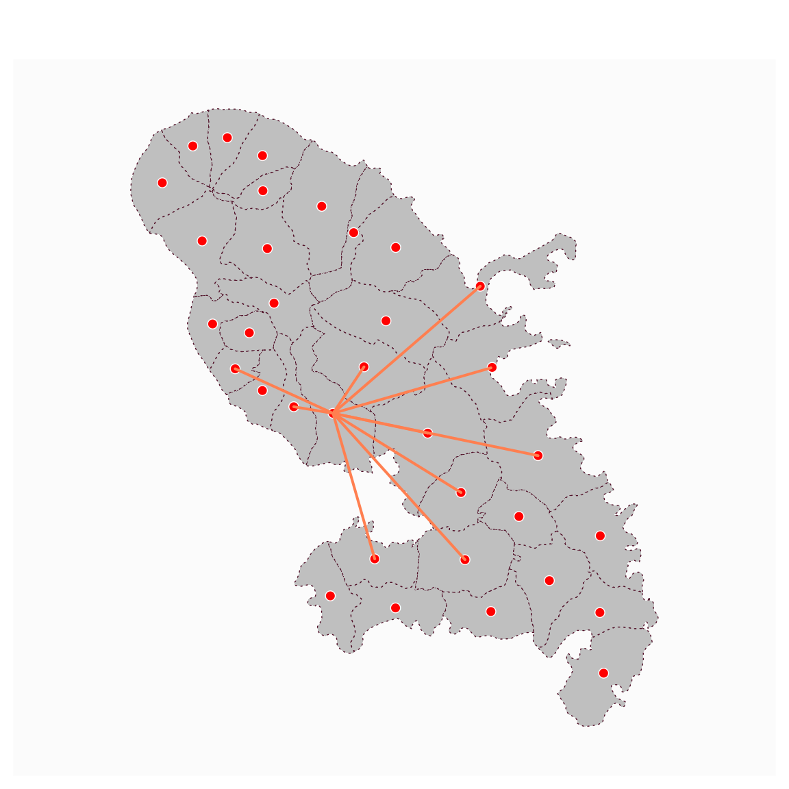

mf_map() can be used to display geographic layers (sf objects), using
the default map type base.
Arguments
- x
object of class
sf,sfcorsfg- col
a color, hex code or color name given by colors. The default color for polygons is the foreground color, the default color for points and lines the highlight color (see mf_theme).
- border
border color for polygons and points symbols, hex code or color name given by colors. The default color for polygon is the highlight color, the default color for points is the foreground color (see mf_theme).
- lwd
border width for polygons and points symbols, lines width
- lty
type of line for polygons borders and lines
- pch
type of symbol to use for points, see pch
- cex
symbols size, 2 means 2 times bigger
- alpha, expandBB, extent, bg, add
arguments described in mf_map
Examples
mtq <- mf_get_mtq()
pts <- mf_get_mtq("points")
flows <- mf_get_mtq("lines")
mf_map(mtq, lty = 3)
mf_map(pts, col = "red", border = "white", pch = 21, add = TRUE)
mf_map(flows, col = "coral", lwd = 2, add = TRUE)
